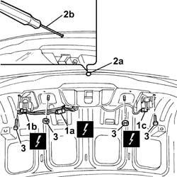
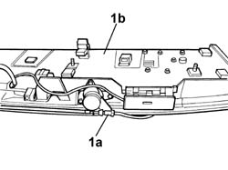

7055A54 NUMBERPLATE HOLDER - R+R
- Path
- Procedures > 70 FITTINGS > 7055 MOULDINGS ON PROTECTIONS > 7055A EXTERIOR MOULDINGS > 7055A54 NUMBERPLATE HOLDER - R+R
- Kind
- repair procedure (removal / refitting; the operation number is the code)
- Applies to
- all engines; all production periods
- Interactive page
- https://sloeber94.github.io/elrnDB-lThss/en/#/80707
Applies to: all engines; all production periods
 Removing
Removing
 Refitting
RefittingDisconnect the negative battery terminal.
Op. 7025B18 BOOT LID LINING - R+R
1. Disconnect the electrical connectors (1a), (1b) and (1c).
Description | Connector | |
|---|---|---|
1a | No. plate lights and external boot opening switch | F055 |
 | Description | Connector |
|---|---|---|
1b | Left rear light cluster (moving section on boot lid) | F035 |
Description | Connector | |
|---|---|---|
1c | Right rear light cluster (moving section on boot lid) | F036 |
3. Undo the nuts and the bolts fixing the number plate holder.

Applies to: all engines; all production periods
Partly remove the number plate holder.
1. Release the lock opening manual control cable (1a) and remove the number plate holder (1b) assembly.

Applies to: all engines; all production periods
Refitting
RemovingPlace the number plate holder in position and secure the lock opening manual control cable.
Tighten the nuts and the bolts fixing the number plate holder.
Connect the electrical connectors.
Fit the rubber cap removed previously.
Description | Connector | |
|---|---|---|
1a | No. plate lights and external boot opening switch | F055 |
Description | Connector | |
|---|---|---|
. | Left rear light cluster (moving section on boot lid) | F035 |
Description | Connector | |
|---|---|---|
. | Right rear light cluster (moving section on boot lid) | F036 |
Op. 7025B18 BOOT LID LINING - R+R
Connect the negative battery terminal.